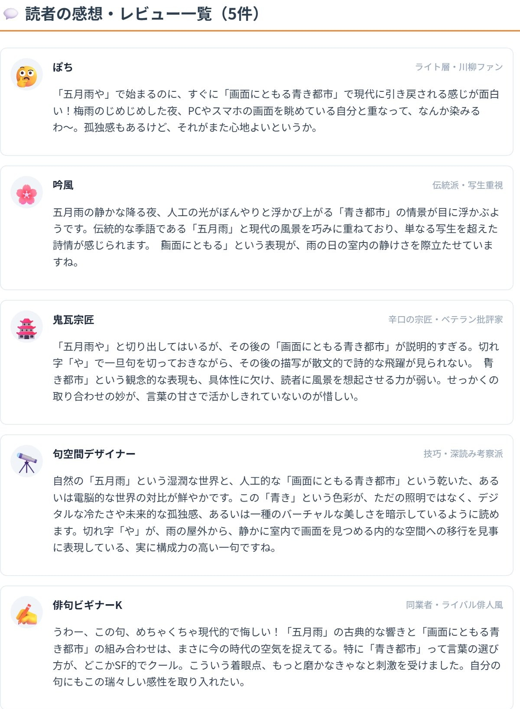

×

あなたの詩を投稿すると、WEB詩誌の感想欄や現代詩クラスタのタイムラインをシミュレートし、仮想の読者や前衛詩人からリアルな解釈・本音コメントが届きます。 「一編モード」では5人前後から濃密な芸術論が、「詩集モード」では20〜30人の愛好家から多様な視点の感想欄が生成されます。
モードを選択し、詩の本文を入力して「投稿する」ボタンを押してください。

詩に集まる読者感想タイムライン（イメージ）詩人や熱心な読者たちが解釈を巡らせています。しばらくお待ちください...
💬 読者の感想・レビュー一覧（0件）